浏览器插件
Safari、Chrome、Edge、Brave、Arc、Firefox。在论文页面一键保存（可同时保存 PDF），搜索结果页可批量保存。
适用于 macOS
文献，各归其位。
轻量、原生的 macOS 文献管理软件。拖入 PDF 自动识别元数据，内置阅读与批注，保留排版的整篇翻译，还能让 AI 智能体帮你查文献、写引用。
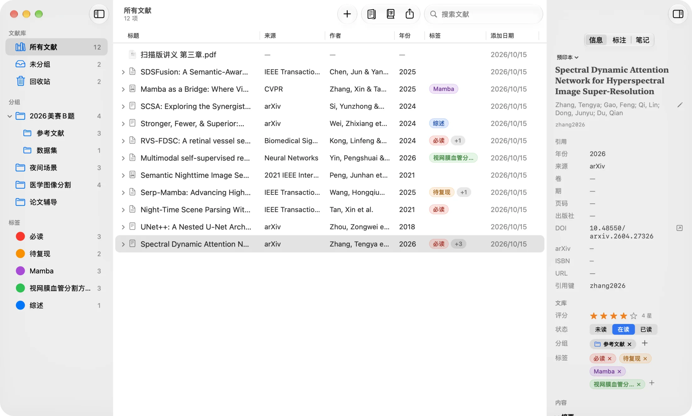
宣传片
自动识别
把 PDF 拖进窗口，Folio 会在几秒内查到标题、作者、期刊、DOI 等信息并建好条目。依次查询 Zotero 识别服务、Crossref、arXiv、OpenAlex、DBLP 与 CVF，找不到时也能手动匹配。
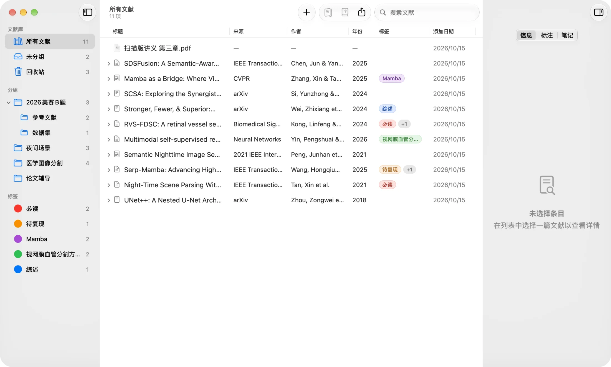
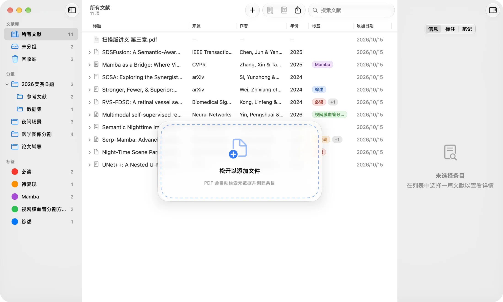
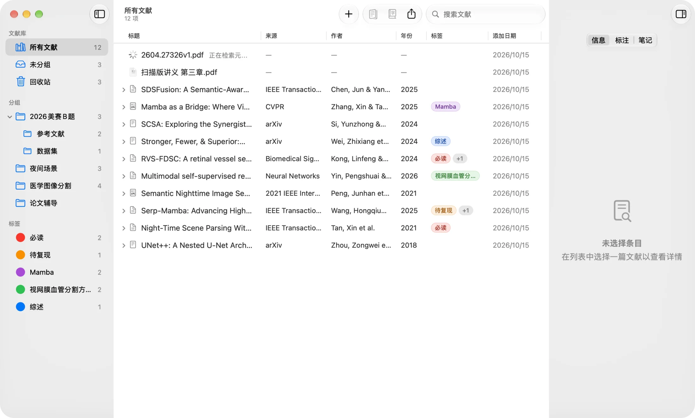
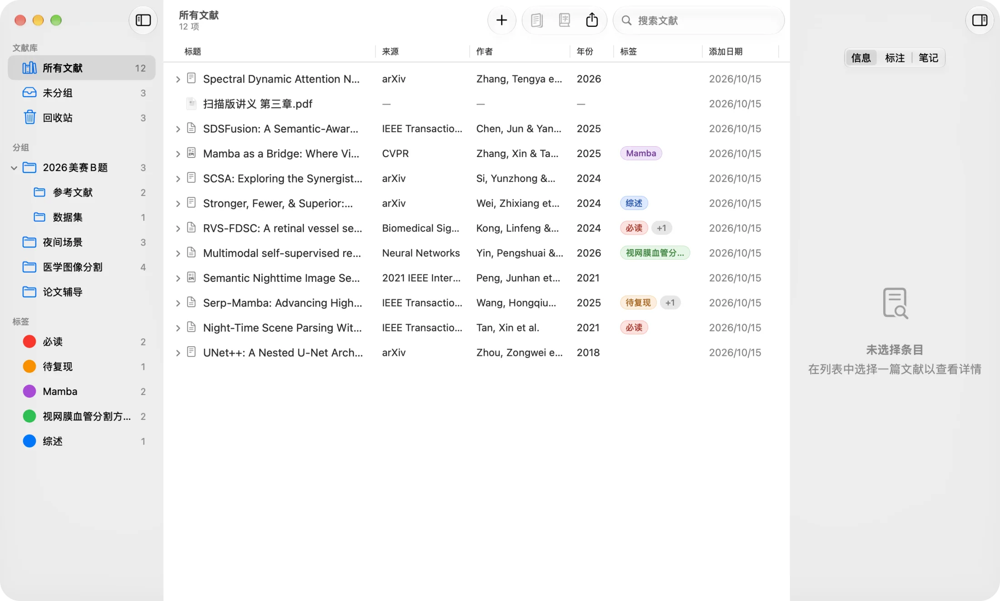
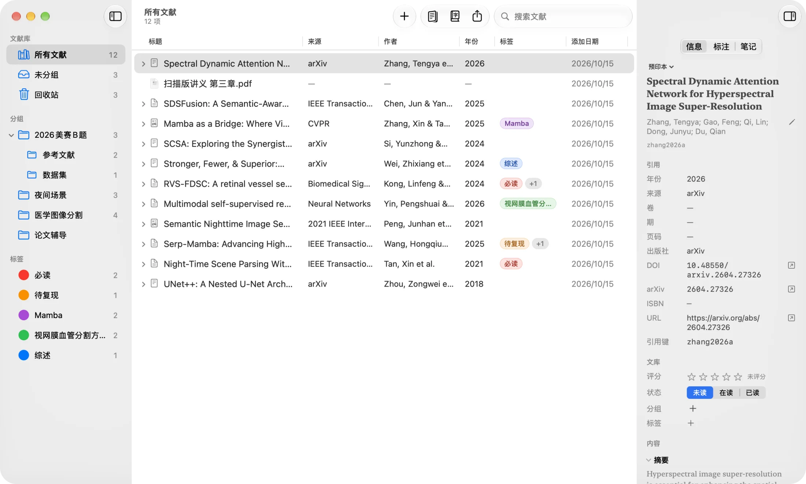
整理
两级分组、可自定义颜色的标签、回收站、阅读状态与星级评分。搜索可以覆盖 PDF 全文，一个条目也能挂多个文件。
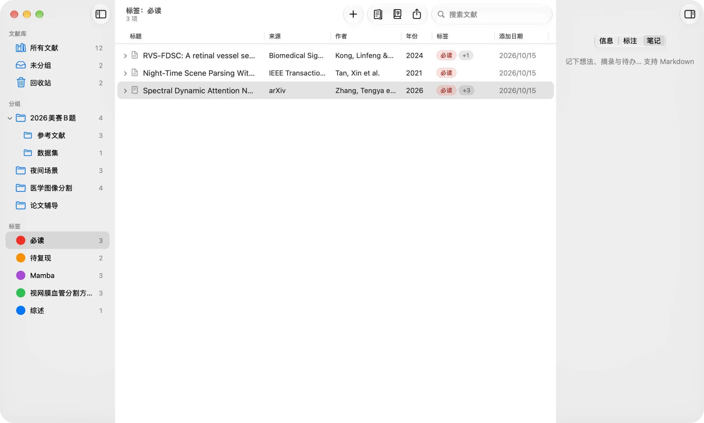
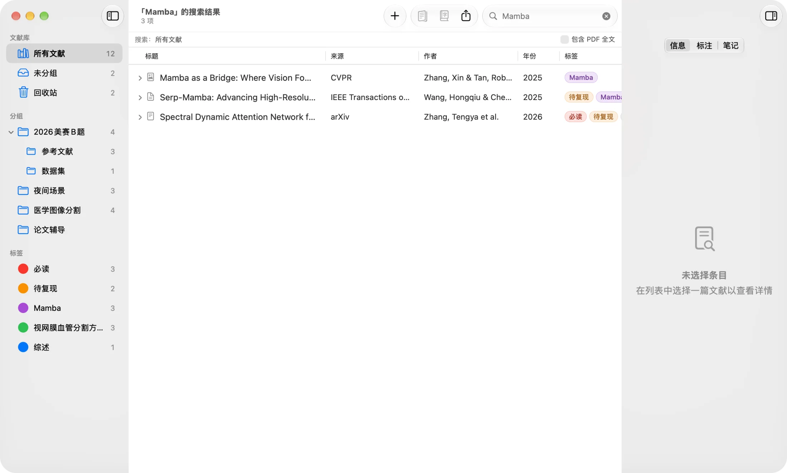
阅读与批注
论文以原生标签页打开。高亮、下划线、删除线、便签、文本框、手绘，批注直接写回 PDF 文件，在「预览」中同样可见。Folio 会记住每篇论文读到哪里，旁边还有一篇 Markdown 笔记。
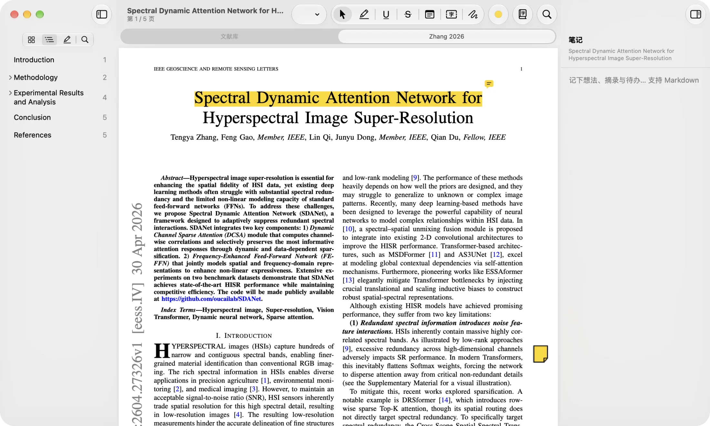
整篇翻译
基于 pdf2zh_next / BabelDOC，公式、图表与版式原样保留。支持 20 多种翻译服务，也可以使用离线的 Apple 系统翻译。译文与原文并排，逐段对照阅读。
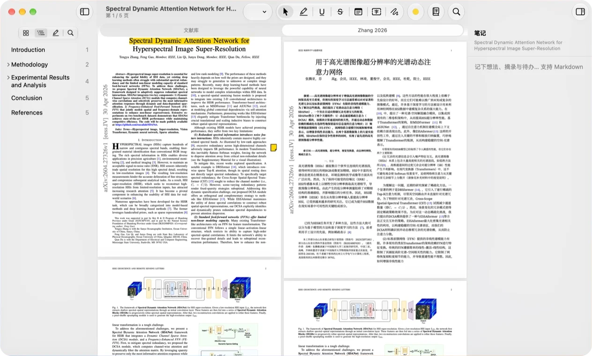
引用
右键 ▸ 复制引用。内置 citeproc-js 与 CSL 样式，支持 9 种格式，也能导出 BibTeX、RIS 与 CSL JSON。
以及 MLA、Chicago、Harvard、Vancouver、Nature。以上均为 Folio 实际生成的引用文本。
深色模式
完整支持深色模式。在 macOS 26 上，Folio 使用全新的 Liquid Glass 外观。
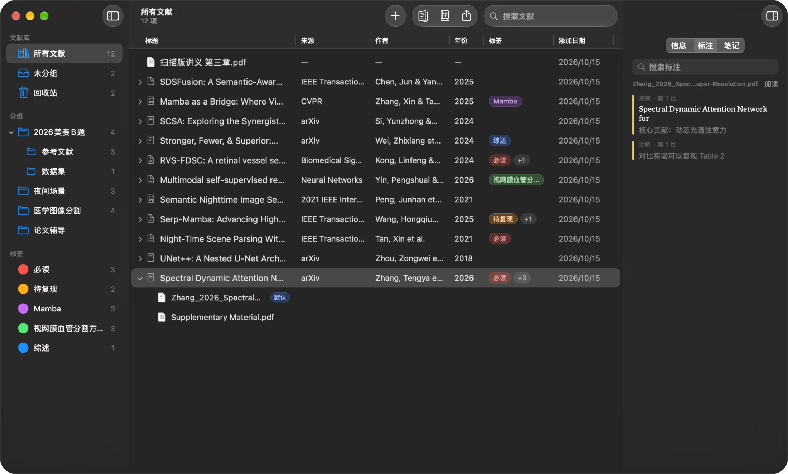
AI 接入
内置 MCP 服务器与命令行工具 folio-cli。在 设置 ▸ AI 中，一键为 Claude Code、Codex、Gemini CLI、Copilot CLI、Cursor CLI 等 11 种智能体添加。也可以关闭「允许 AI 修改文献库」，只让 AI 读取。
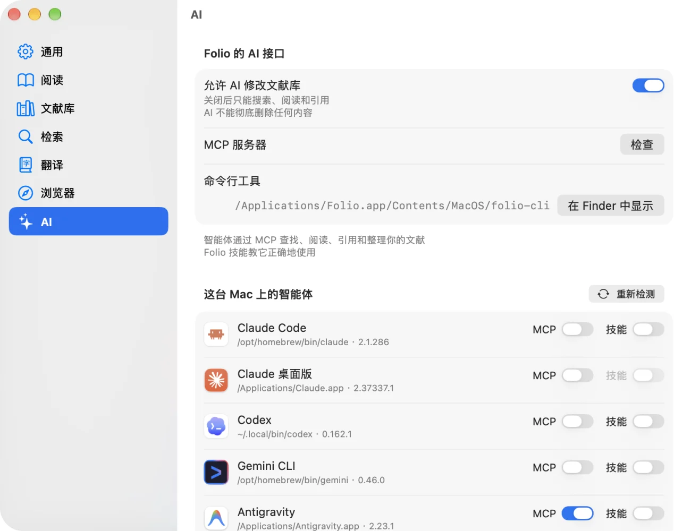
轻快
Safari、Chrome、Edge、Brave、Arc、Firefox。在论文页面一键保存（可同时保存 PDF），搜索结果页可批量保存。
一键导入条目、PDF、分组和标签。只读取数据库副本，不会修改 Zotero。
每个条目一篇笔记。阅读时选中文字，一键加入笔记。
界面支持简体中文和英文，默认跟随系统语言，也可以在设置中切换。
后台下载，重新启动即完成安装。安装前校验 EdDSA 签名。
不收集任何使用数据，文献库完全保存在你的 Mac 上。API 密钥存放在系统钥匙串中。